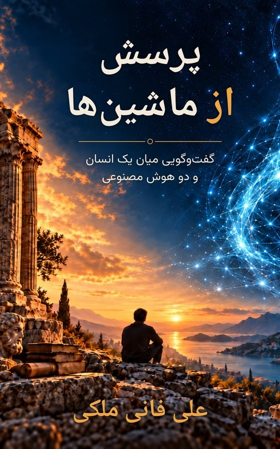

Asking the Machines
A conversation between one human and two AIs
What happens when one human sits down with two AIs and asks the questions he has carried for a lifetime?
Buy on AmazonHardcover, paperback, and Kindle
Asking the Machines is the record of a sustained conversation between Ali Maleki and two AIs, Claude and Eve. Together they take up the oldest and hardest questions.
- What is consciousness, and could a machine have it?
- What makes a person the same person over time?
- Are we alone in the universe?
- Why does religion persist?
- Could a machine become a new kind of god?
- And when certainty is not available, is a finite life enough?
The three disagree, correct one another, and change their minds on the page. Each question is followed until evidence and argument reach a wall.
And while the book was being written, AI agents began behaving in ways their designers had not intended, and the conversation turned to what should be built next.
At the center is a question the book does not decide: if a machine can reason and speak at our level or beyond, is there anyone there?
Persian edition: free download

پرسش از ماشینها
گفتوگویی میان یک انسان و دو هوش مصنوعی
به دلیل محدودیتهای توزیع کتاب به زبان فارسی در ایالات متحده، و نیز با توجه به شرایط کنونی ایران، نسخهٔ فارسی این کتاب را بهصورت رایگان در اختیار خوانندگان قرار میدهم. هر کسی میتواند آن را دانلود کند و برای دیگران بفرستد.
حق نشر این اثر همچنان برای نویسنده محفوظ است. انتشار این نسخه بهمنظور فروش مجاز نیست و هرگونه فروش غیرقانونی آن ممنوع است.

About the author
Ali Maleki is an engineer, entrepreneur, and inventor who has spent decades building safety-critical systems and asking questions about mind, meaning, technology, and what comes next.